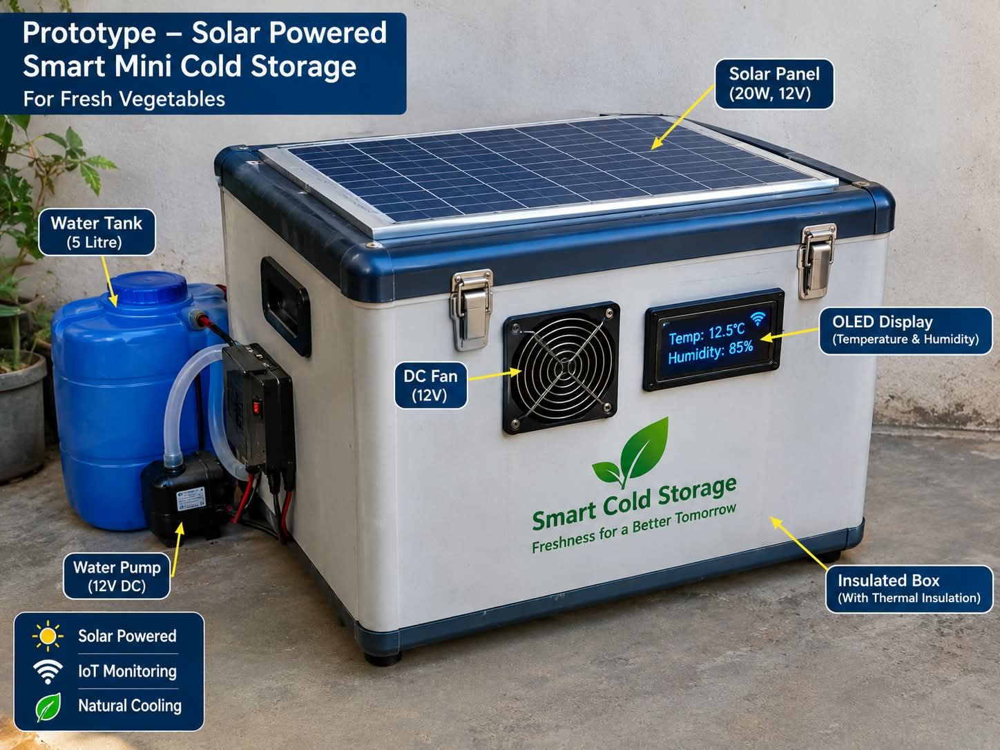
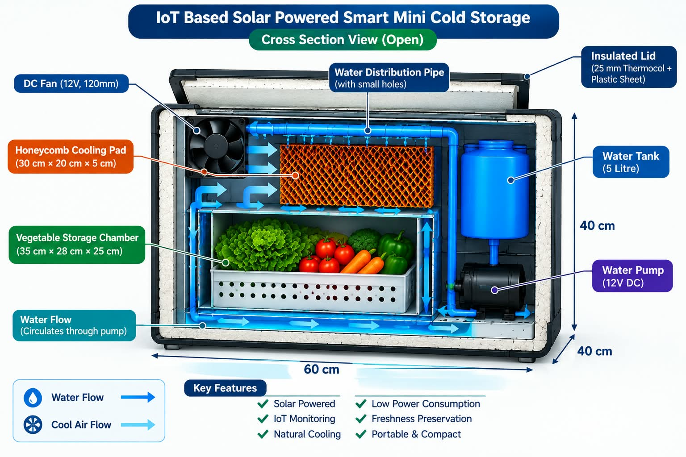
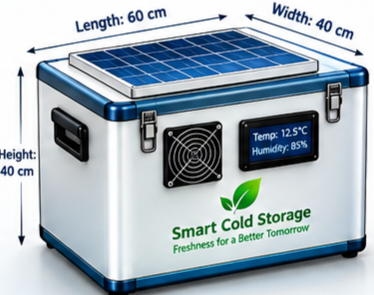
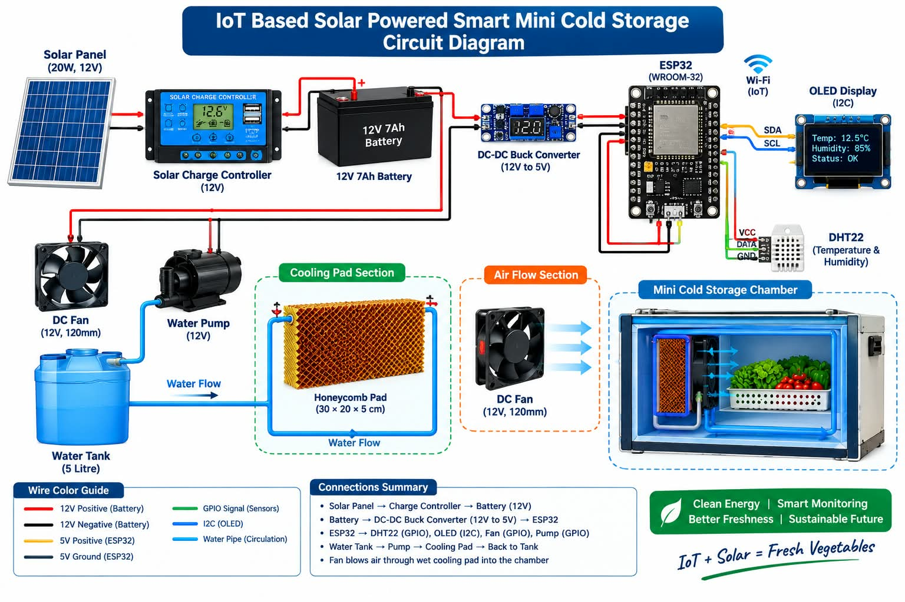

A low-cost solar-powered smart cold storage solution for preserving fresh vegetables in rural and remote areas.
The IoT Based Solar Powered Smart Mini Cold Storage is designed to provide a compact and energy-efficient storage solution for fresh vegetables. The system combines solar energy, battery backup, cooling, temperature and humidity monitoring, and IoT technology.
Use solar energy as the primary power source for the system.
Provide a suitable cooling environment for fresh vegetable storage.
Monitor temperature and humidity using ESP32 and sensors.
Develop a compact and affordable storage concept suitable for decentralized use.
The solar panel generates electrical energy and supports battery charging.
A DC water pump circulates water through the cooling pad.
A DC fan moves air through the cooling system and storage chamber.
ESP32 and DHT22 monitor temperature and humidity conditions.
The OLED display shows sensor readings to the user.
Fresh vegetables are stored inside the insulated storage chamber.
| Component | Specification | Purpose |
|---|---|---|
| Solar Panel | 20W | Power generation |
| Battery | 12V, 7Ah | Energy storage and backup |
| ESP32 | ESP32-WROOM-32 | Control and IoT monitoring |
| DHT22 | Temperature & Humidity Sensor | Environmental monitoring |
| OLED Display | 0.96 inch I2C | Display sensor readings |
| DC Fan | 12V, 120mm | Air circulation |
| Water Pump | 12V DC | Water circulation |
| Cooling Pad | 30 × 20 × 5 cm | Evaporative cooling |
| Insulation | 25mm EPS | Reduce heat transfer |
| Relay / MOSFET | Load Control | Control electrical loads |




Demonstration of the IoT Based Solar Powered Smart Mini Cold Storage prototype, including its components, cooling system and working principle.
View the complete project report containing the system design, components, working principle, advantages, limitations and future scope.
📄 View Project ReportThe IoT Based Solar Powered Smart Mini Cold Storage combines renewable energy, cooling technology and smart monitoring into a compact system. The concept aims to provide a decentralized storage solution for fresh vegetables, particularly in areas where reliable electricity and transportation infrastructure can be challenging.